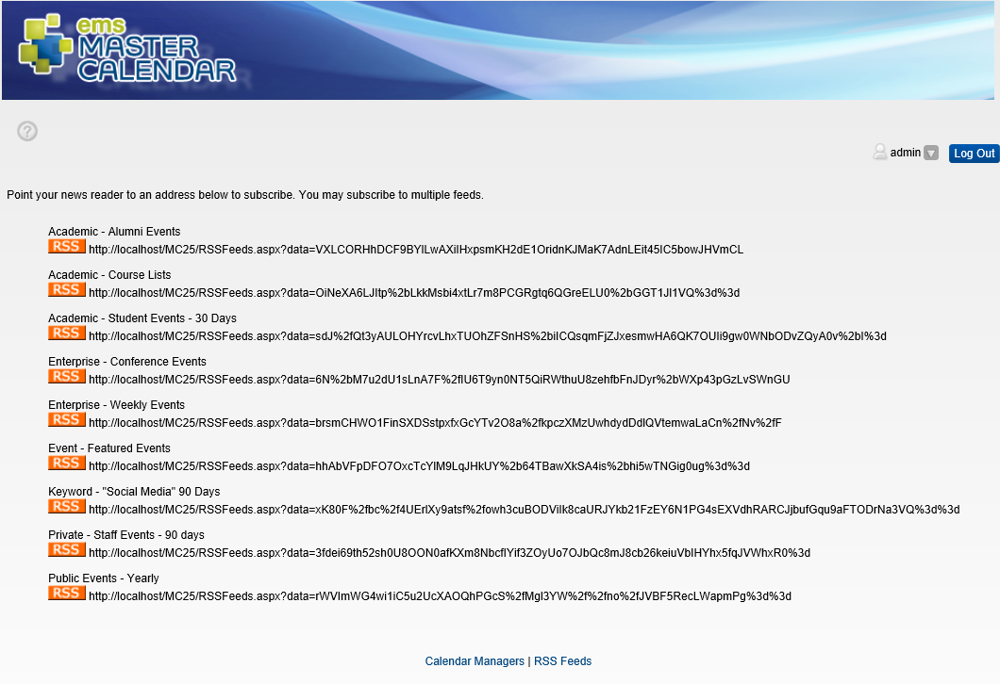

If your site administrator has configured RSS feeds, the RSS Feeds hyperlink will be available at the bottom of all pages in EMS Master Calendar.
NOTE: The first time you click the RSS Feeds link, you may be prompted to download an RSS feed reader.
